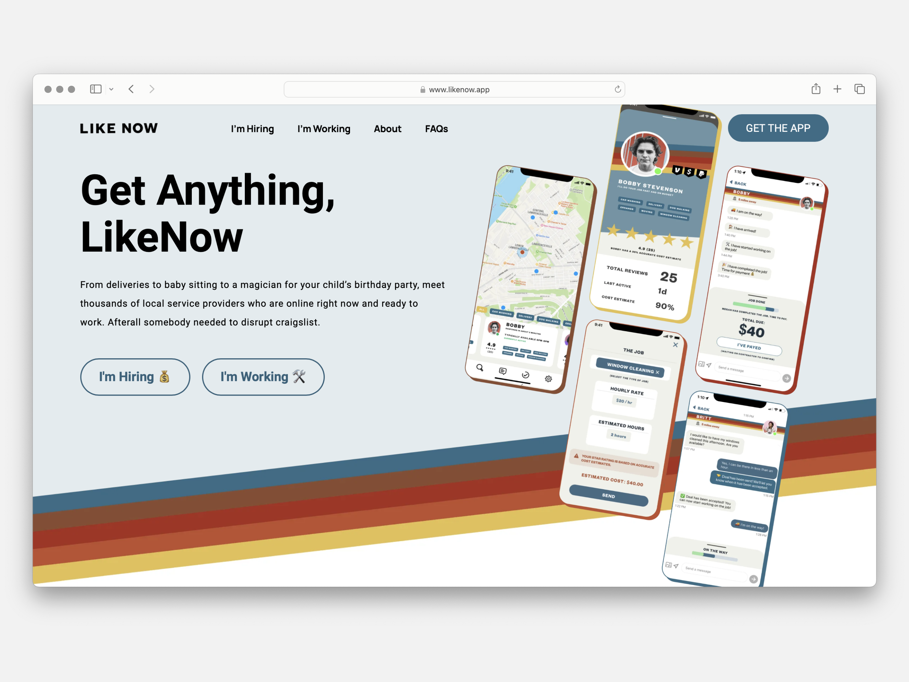
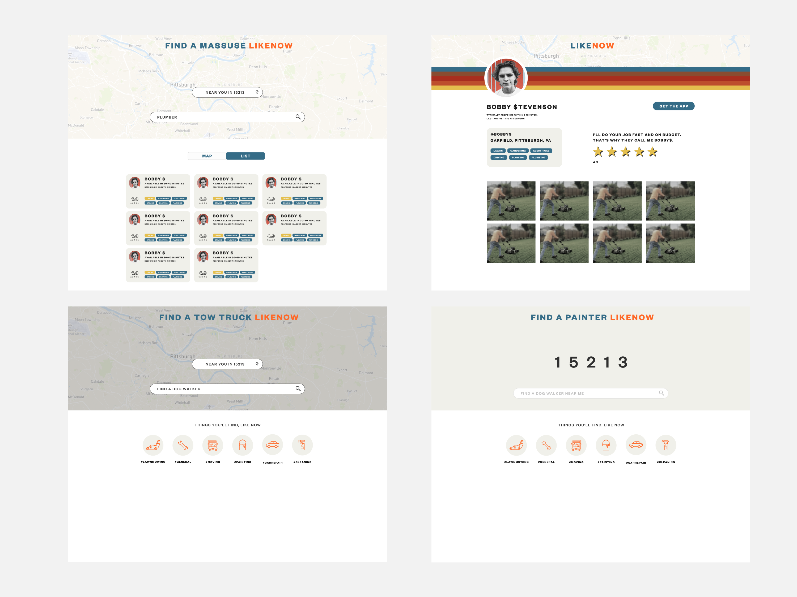
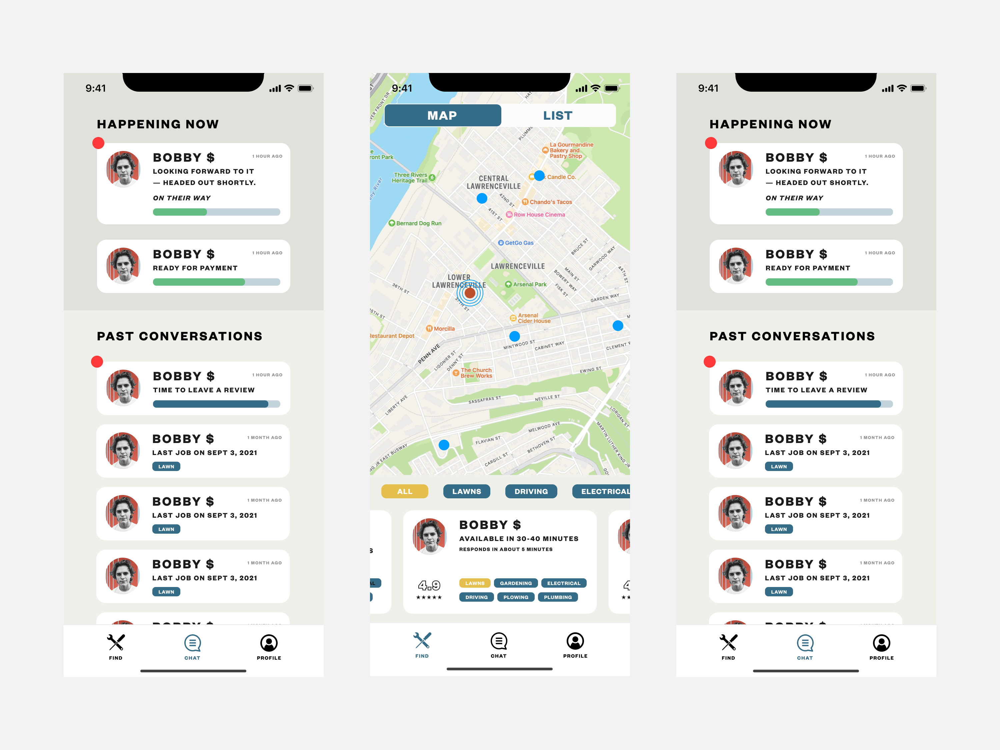
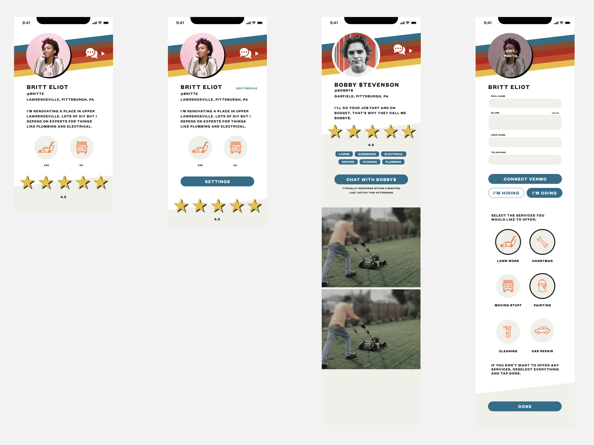
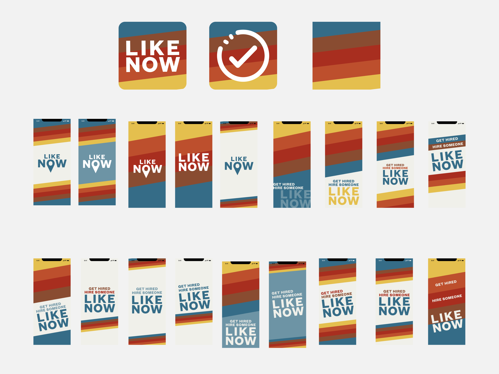
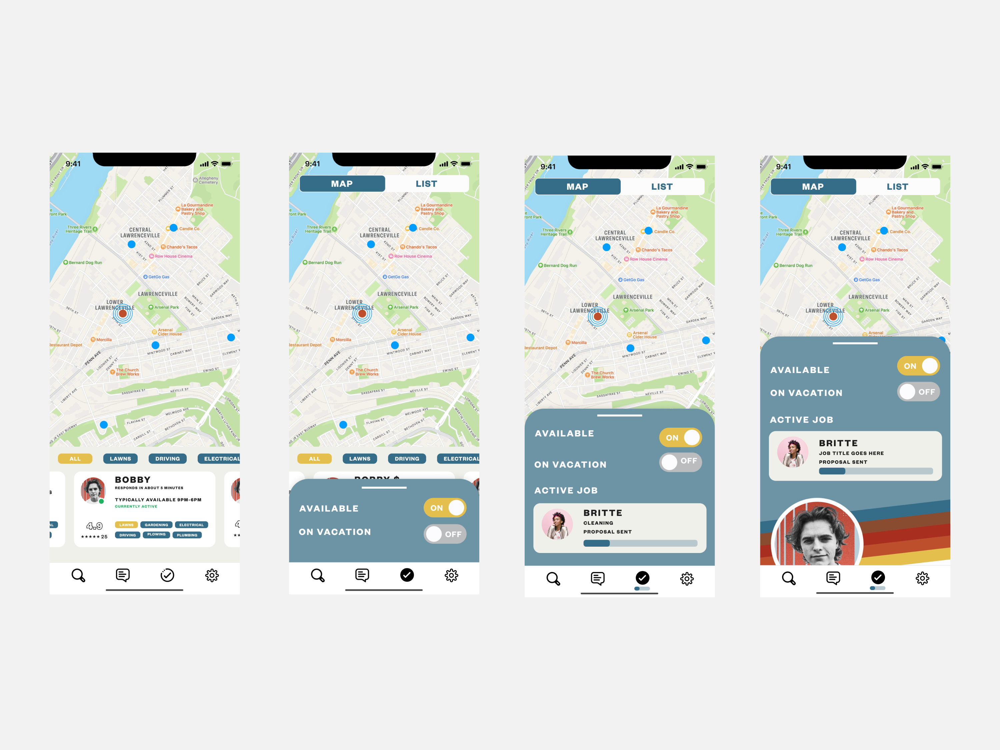

Designing an App with Friends
One conversation turned into a company
LikeNow started from a conversation between friends. One friend had the realization that startup "dogfooding" culture had left out lower-income citizens from the majority of startup ideas. The other friend was working on an on-demand company to buy back used electronics with a demographic mainly in lower-income areas. After that conversation, Joey and Elliott decided to join forces, both expanding the concept from not just buying back used electronics, to covering the entire spectrum of the "Craigslist Economy".
Roles: Founder, Designer.
Collaborators: Joey Rahimi, Mike Darweesh, Megan Earfly
Current State
Lower-income citizens are constantly excluded from the majority of the job market. This doesn't just cover traditional 9-5 jobs, but expands all the way to on-demand apps such as working for Uber or Instacart. Several factors cause this phenomenon including how the legal system constantly and disproportionately charges and convicts poor people with crimes. Additionally, most of the on-demand economy requires background checks and vehicle minimums meaning to even drive for Uber, a person needs to have a car worth more than some people's yearly salary. Adding insult to injury, once these jobs are secured, the salaries are as low as a few dollars an hour creating a new loophole evading the minimum wage in this country.
Ideal State
The concept is simple. Build an alternative to the Uber's and Doordash's that 1 respect the diversity of skills of an individual, and 2 don't charge 20-40 percent of earnings. The former strategy is to promote the "handyman" aspect of most people in lower-income tiers. In contrast to the hyperspeciality of high paid jobs (iOS micro-animations designer as an example), most lower paid jobs, and so lower paid citizens, have a wider array of skills that demand lower rates from the job market. Instead of pegging people into a single vertical causing many to use multiple apps each day to earn a living, create a place where the worker is elevated and encouraged to express their multiplicity of value they can contribute to the world.
Secondly, instead of destroying a chance for an honest living with steep fees that are most of the time even higher than Federal Income Taxes to support salaries of thousands of tech workers, stay lean, keep the team small and keep the founding team squarly in the middle class and not chasing massive exits. 




